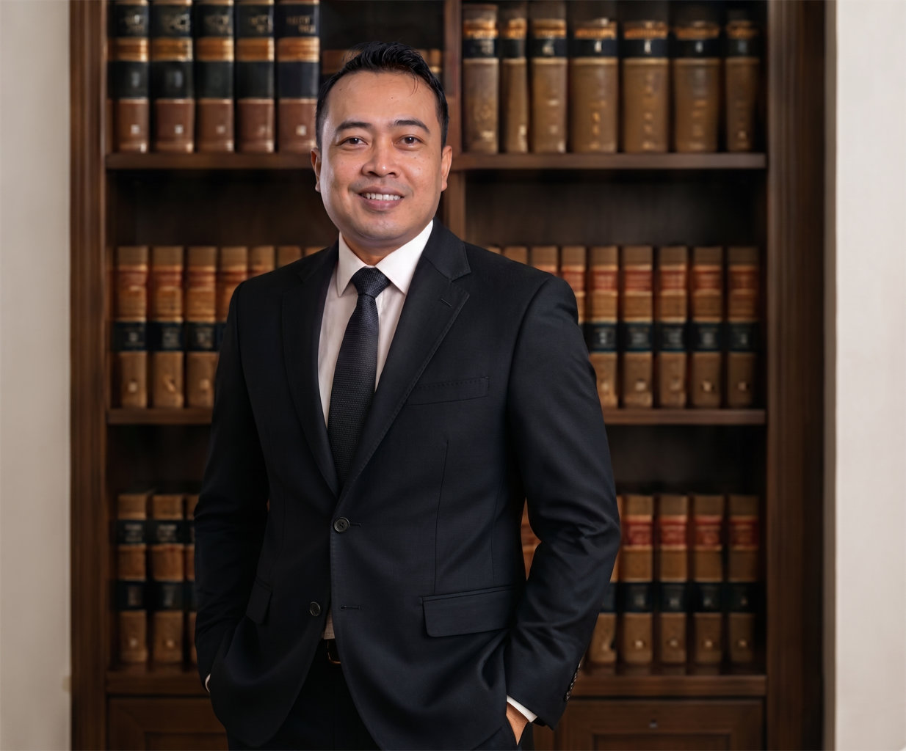

Layanan Kami
Bidang Hukum yang
Kami Tangani
Perdata
Menyelesaikan sengketa perdata dengan strategi yang tepat.
Pidana
Pendampingan hukum pada setiap tahap proses hukum pidana.
Perceraian
Solusi terbaik untuk kasus perceraian dan hak asuh anak.
Waris
Penyelesaian sengketa waris secara adil dan sesuai hukum.
Perusahaan
Pendampingan hukum untuk bisnis dan korporasi.
Pertanahan
Sengketa tanah, sertifikat dan permasalahan pertanahan.
Perjanjian
Pembuatan dan review kontrak serta perjanjian hukum.
Mediasi
Penyelesaian sengketa melalui mediasi secara efektif.
Masalah yang Kami Tangani
Apakah Anda Mengalami
Masalah Berikut?
- Sengketa tanah atau bangunan
- Gugatan wanprestasi
- Perceraian dan hak asuh anak
- Sengketa waris
- Perusahaan bermasalah
- Penagihan piutang
- Sengketa kontrak/perjanjian
Mengapa Memilih Kami
Komitmen Kami
Untuk Klien
Komunikasi yang Jelas
Kami menjelaskan setiap langkah hukum dengan bahasa yang mudah dipahami.
Pendekatan Realistis
Kami memberikan strategi terbaik berdasarkan kondisi perkara secara objektif.
Respon Cepat
WhatsApp dijawab dengan cepat pada jam kerja.
Kerahasiaan Terjamin
Setiap konsultasi klien kami jaga kerahasiaannya dengan etika profesi.
Tentang Kami
Joko Siswanto, S.Kom., S.H.
Advokat
Berpengalaman lebih dari 10 tahun dalam menangani berbagai perkara litigasi dan non litigasi untuk klien individu, keluarga, dan perusahaan
- Berlisesi dan terdaftar pada PERADI
- Pendidikan S1 Teknik Informatika - Universitas Bhina Nusantara
- Pendidikan S1 Hukum - Universitas
- Spesialis Perdata, Bisnis, dan Pertanahan

Proses Penanganan Perkara
Bagaimana Kami Bekerja
-
Konsultasi Awal
Anda menjelaskan permasalahan pada kami.
-
Analisis & Dokumen
Kami menganalisis perkara dan dokumen terkait.
-
Strategi Hukum
Kami menyusun strategi hukum yang paling tepat untuk Anda.
-
Pendampingan
Kami mendampingi setiap proses sesuai kesepakatan.
-
Penyelesaian
Kami berupaya mencapai hasil terbaik bagi kepentingan Anda.
Testimoni Klien
Apa Kata Klien Kami
Penjelasannya sangat jelas dan mudah dipahami. Saya merasa tenang karena ditangani secara profesional.
- Pengusaha, MalangSangat membantu dalam proses perceraian saya. Komunikatif dan selalu memberi solusi terbaik.
- Ibu Rumah Tangga, MalangPendampingan hukum perusahaan kami sangat baik. Respon cepat dan hasilnya memuaskan.
- Direktur Perusahaan, MalangPertanyaan yang Sering Ditanyakan
FAQ
Berapa biaya konsultasi?
+
It is a long established fact that a reader will be distracted by the readable content of a page when looking at its layout.
Apakah bisa konsultasi online?
+
It is a long established fact that a reader will be distracted by the readable content of a page when looking at its layout.
Apakah semua perkara harus ke pengadilan?
+
It is a long established fact that a reader will be distracted by the readable content of a page when looking at its layout.
Bagaimana privasi klien diperlakukan?
+
It is a long established fact that a reader will be distracted by the readable content of a page when looking at its layout.
Apakah menerima klien luar malang?
+
It is a long established fact that a reader will be distracted by the readable content of a page when looking at its layout.
Dokumen apa saja yang perlu disiapkan sebelum komunikasi?
+
It is a long established fact that a reader will be distracted by the readable content of a page when looking at its layout.